HELP FIND THE FOLLOWING LOCATIONS
THE COUNT OF MONTE CRISTO: The Affair of the Three Napoleons
(Bud Boetticher, Spring, 1955)
Corriganville, 'Robin Hood's Forest' - France, 1834 (Identified by Todd Spiegelberg, July 2023).
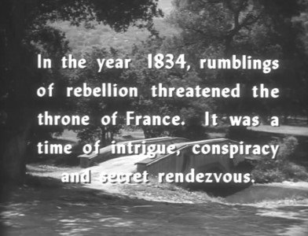
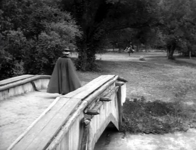
Château d'Ussé, Indre-et-Loire, France - Establlishing shot of the Count's Chateau near Paris.
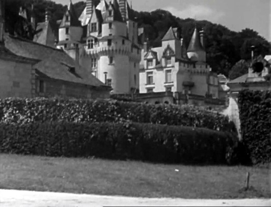
Unknown 1 -
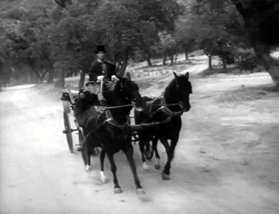
Unknown 2 -
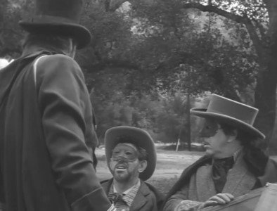
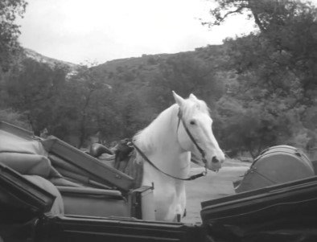
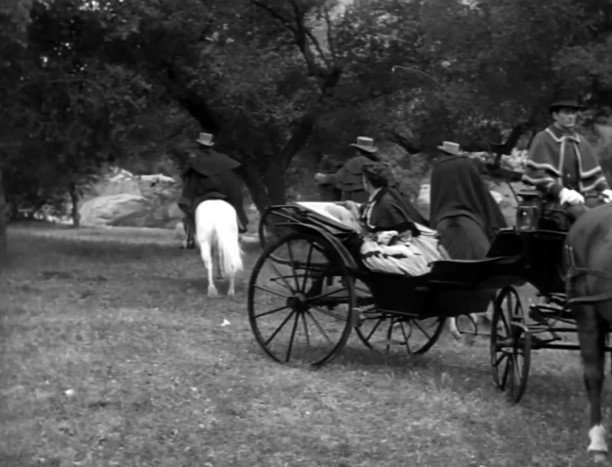
Unknown 3 -
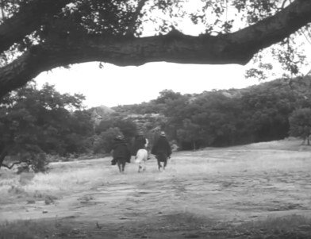
THE COUNT OF MONTE CRISTO: The Pen and the Sword (Charles Bennett, 1955)
Unknown 1 - 'Veritas' delivers one of his messages - accusing General Jean Beauclair of corruption.
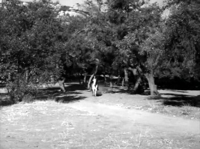
Iverson Movie Ranch - 'Veritas' delivers one of his messages - accusing General Jean Beauclair of corruption.
(Identified by Iverson Movie Ranch Blog)
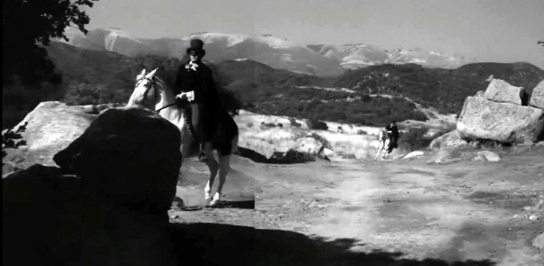
Unknown 3 - The Count is taken to the house where DuBois is being held.
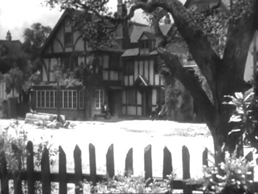
THE COUNT OF MONTE CRISTO: The Dubarry Affair (Sidney Salkow, 1955)
Corriganville - The King is hunting when Monte Cristo foils an assasination attempt.
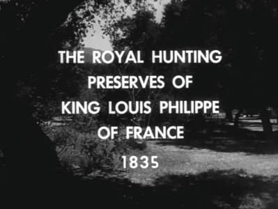
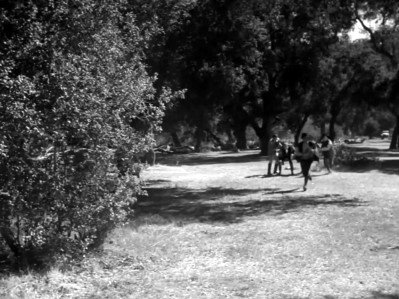
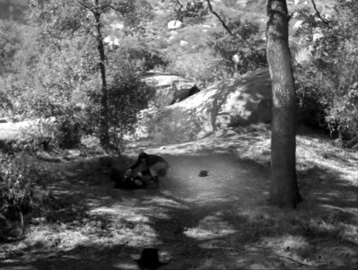
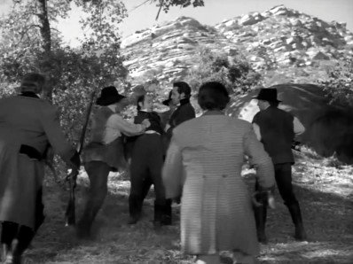
Unknown 2 - The home of the Duchess Dubarry
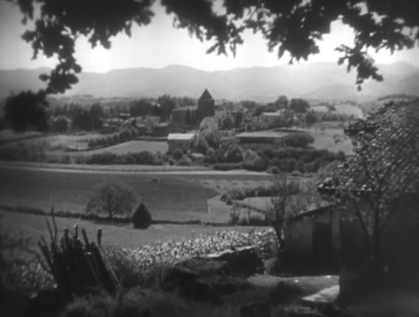
Palace of Versailles, France - Pierre, the minister of the Interior reports to the King at Versailles.
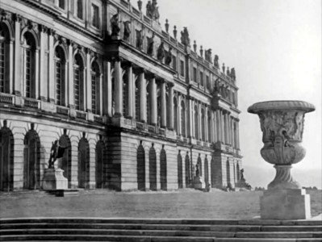
Corriganville, 'Robin Hood's Forest' - The Count and his men race to the Fortress of Blaye (Identified by Todd Spiegelberg, July 2023).
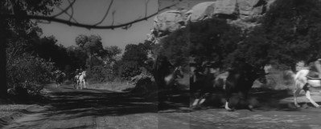
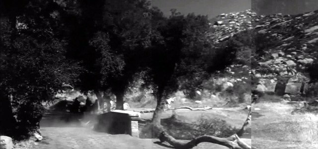
Unknown 3 - The Fortress of Blaye
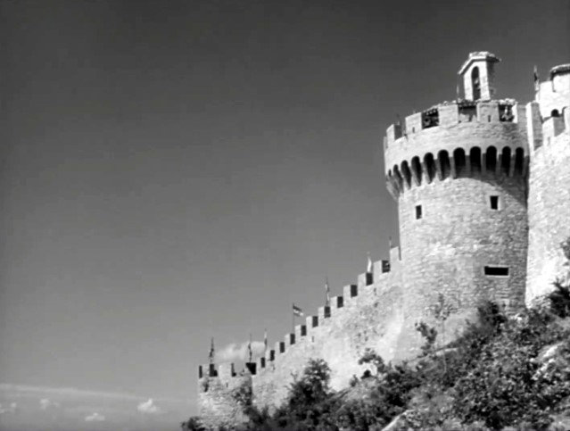
Unknown 4 - Monte Cristo entres the fortress to rescue the Empress
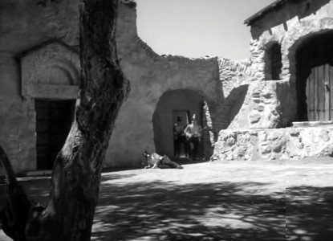
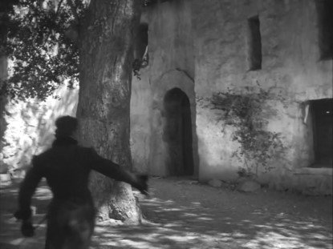
Corriganville, 'Stunt Rock' - Monte Cristo and his men flee the Fortress of Blaye with the Empress
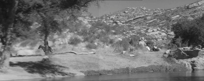
Corriganville -
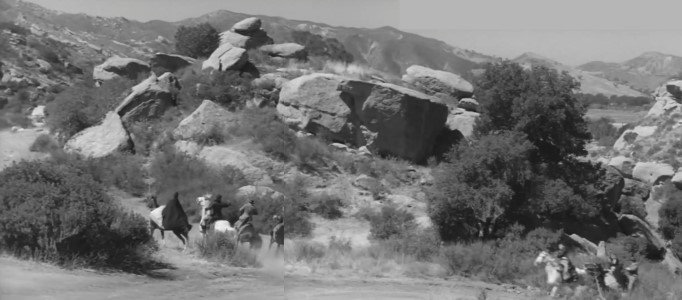
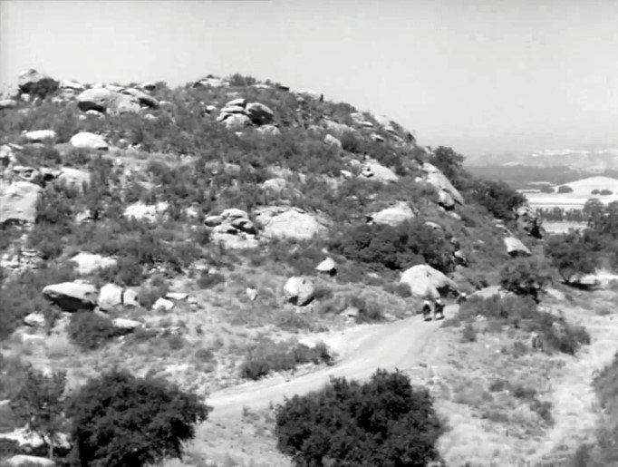
Unknown 6 -
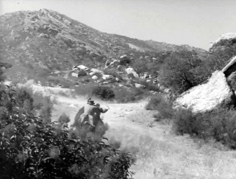
Corriganville, near 'Fort Apache' -
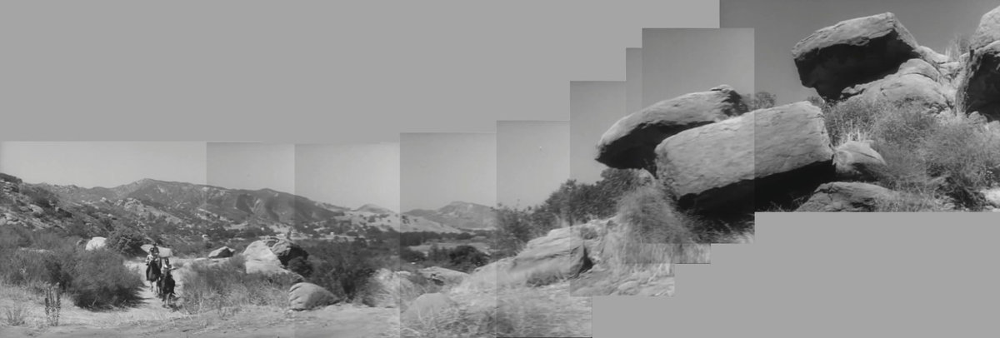
Unknown 7 -
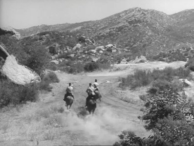
Corriganville, 'Robin Hood's Forest' - Monte Cristo and his men make their way to Paris with the Empress (Identified by Todd Spiegelberg, July 2023)
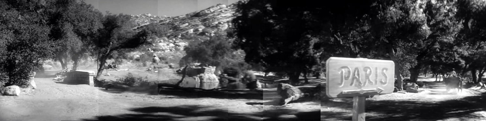
Château d'Ussé, Indre-et-Loire, France - Monte Cristo and his men with the Empress arrive at the Count's Chateau near Paris.
THE COUNT OF MONTE CRISTO: The Black Death (Sidney Salkow, 1955)
Illustration - Paris, 1835
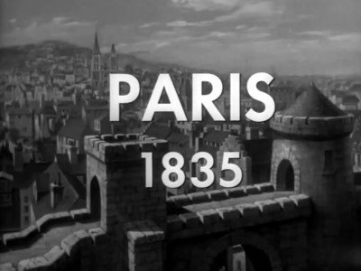
Sacré-Cœur Basilica, Montmartre, Paris (constructed 1905) - Paris, 1835
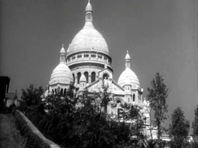
Corriganville - Monte Cristo is prevented from leaving Paris for lyon due to an autbreak of plague.
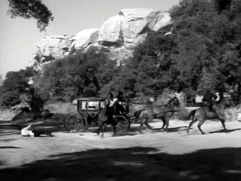
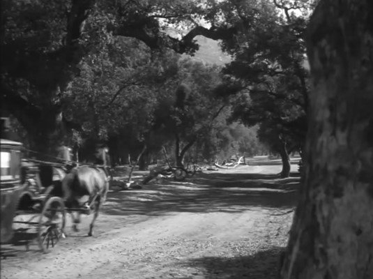
Château d'Ussé, Indre-et-Loire, France - The Count provides a refuge for Doctor Rousse at his Chateau near Paris.
Corriganville, 'Spanish Village' - The Doctor Rousse and Monte Cristo go to Montmatre to inspect the well.
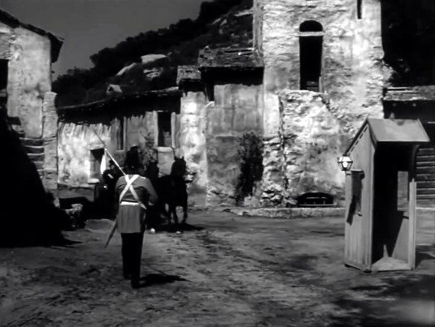
THE COUNT OF MONTE CRISTO: Affair of Honour (Charles Bennett, Spring, 1955)
Unknown 1 - Monte Cristo arrives too late to prevent a duel.
(Identified by Iverson Movie Ranch Blog)
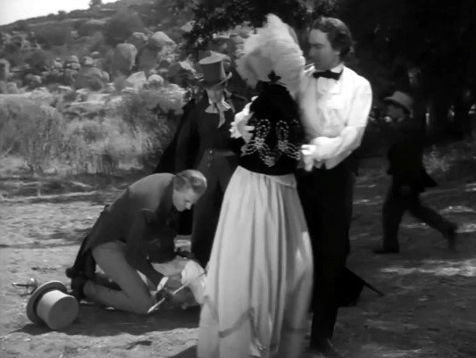
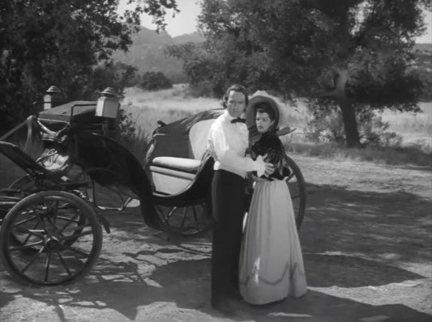
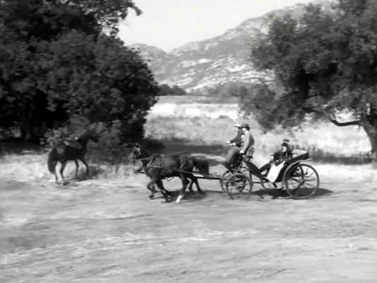
Château d'Ussé, Indre-et-Loire, France - The Count takes Antoinnee to his Chateau near Paris.
Unknown 2 - Monte Cristo calls on Professor Von Humbolt to qustion him about poisons.
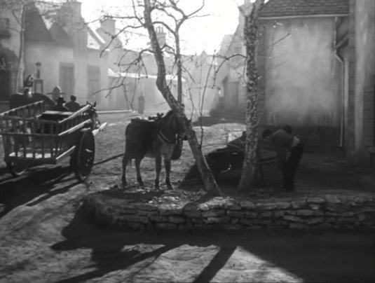
Unknown 3 - Monte Cristo goes to meet Antoine in the cave where he is hidden.
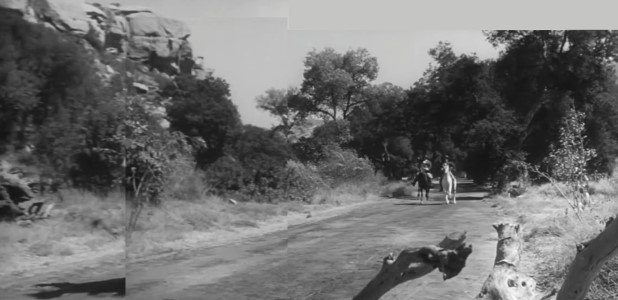
Iverrson Movie Ranch - ....the road is guarded by Jacopo (Nick Cravat).
(Identified by Iverson Movie Ranch Blog)
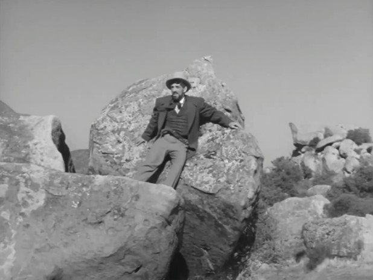
Iverson Movie Ranch - ....the road is guarded by Jacopo (Nick Cravat).
(Identified by Iverson Movie Ranch Blog)
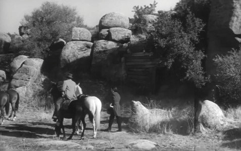
Unknown 6 - ....the road is guarded by Jacopo (Nick Cravat).
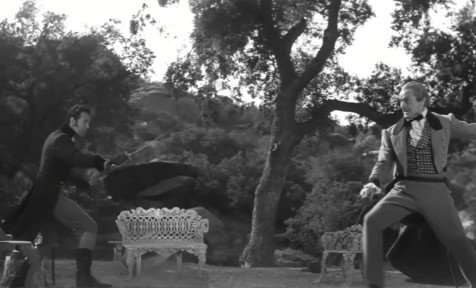
THE COUNT OF MONTE CRISTO: First Train to Paris (Sidney Salkow, 1955)
Illustration of Paris - The first railway from Lyon to Paris is due to explode.
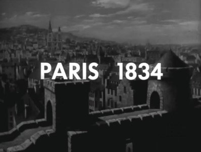
Unknown 1 - Duke of Cordot's men are waiting to intercept Monte Cristo.
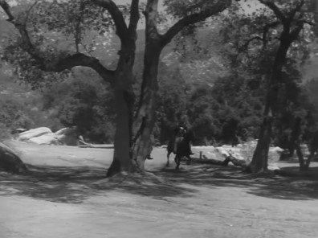
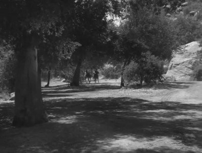
Unknown 2 - Duke of Cordot's villa.
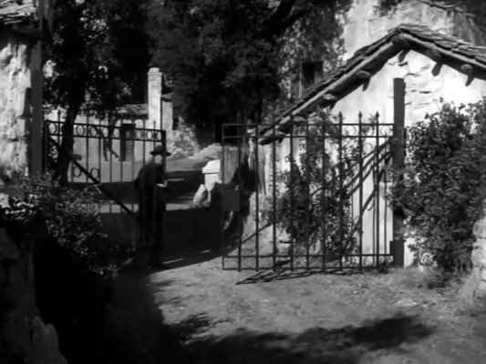
Unknown 3 - Cristo buys railway shares at the Paris stock exchange.
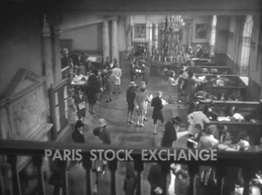
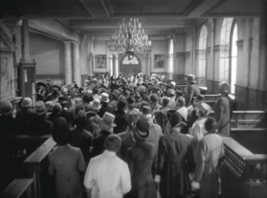
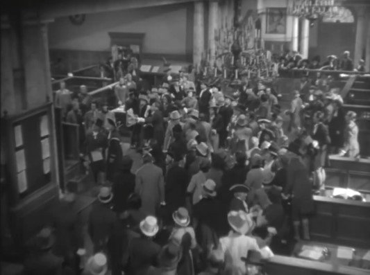
THE COUNT OF MONTE CRISTO: The Sardinia Affair (Sidney Salkow, 1955)
Iverson Movie Ranch - Sardiinia 1835.
(Identified by Iverson Movie Ranch Blog)
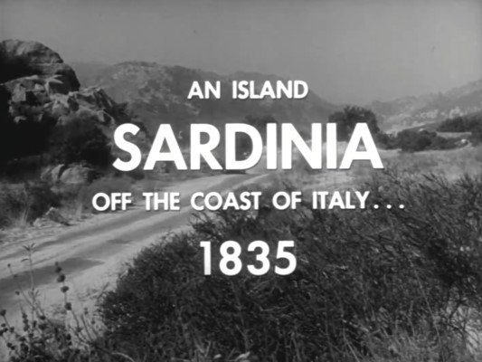
Corriganville - Cristo is introduced to local injustice.
(Identified by Iverson Movie Ranch Blog)
Corriganville - Villa Terranova farm.
(Identified by Iverson Movie Ranch Blog)
Unknown 4 - An inn in Sardinia.
Unknown 5 - Monte Cristo goes to exaimine minerals on the farm.
Corriganville - The scaffold site.
Unknown 7 - Cristo hides in a mine site.
THE COUNT OF MONTE CRISTO: Return to the Château d'If (Sidney Saklow, 1956)
Unknown 1 - The Duke is crossing French-Italian Border, 1835.
Hôtel de Klinglin (Hôtel du Préfet), Place Broglie, Strasbourg, France - She is tiold that the Duke has been shot at the border.
Château d'Ussé, Indre-et-Loire, France - She goes to the Count's Chateau near Paris for help.
Effects shot of the Château d'If - The Château d'If.
THE COUNT OF MONTE CRISTO: The Golden Blade (Sidney Salkow, 1956)
Unknown 1 - Military Barracks, Paris, 1835
Corriganville, 'Fort Apache' - The gold for the army payrole leaves the Military Barracks, Paris (Identified by Todd Spiegeberg, July 2023)
Corriganvile - The gold for the army payrole is hijacked.
(Identified by Iverson Movie Ranch Blog)
Unknown 2 - Sgt. D'Avril is arrested for the crime
Unknown 3 - The Count arranges for a shipment of his gpold to be stolen.
Corriganville - The Count arranges for a shipment of his gpold to be stolen.
Corriganville, 'Corsican Village'/'Vendetta Village' - The Count follows his stolen gold to a wayside inn.
Corriganville, 'Corsican Village'/'Vendetta Village' - The Count is taken to the deserted barracks at Senlis.
Unknown 5 - Carlo a carrage at the deserted barracks at Senlsi.
THE COUNT OF MONTE CRISTO: Andorra (Sidney Salkow, 1956)
Carcassonne, Occitania, France - The palace of the Duke of Andorra, 1837
Unknown 1 - Monte Cristo and his men arrive in Adorra, summoned by the Duke.
Iverson Movie Ranch - Monte Cristo and his men arrive in Adorra, summoned by the Duke and find it rough country.
(Identified by Iverson Movie Ranch Blog)
Corriganville - Monte Cristo acts as decoy travelling in a closed carrage.
Unknown 3 - Monte Cristo acts as decoy travelling in a closed carrage.
Unknown 5 - Monte Cristo acts and the children watch as some travelling players are stopped and searched.
Unknown 6 - The travelling players cross the Andorra-Spain border.
THE COUNT OF MONTE CRISTO: The Duel (Sidney Salkow, 1956)
Setting - the Paris-Toulon coach terminal, 1835.
Château d'Ussé, Indre-et-Loire, France - Odette de Combray arrives at the Count's chateau to get him to stop a duel.
The Palais Garnier, Place de l'Opéra, Paris, France - The Count of Monte Cristo is lured to the Opera by a letter purporting to be from Odette de Combray.
The Chapel of Sainte Ursule de la Sorbonne, Paris, France - The stroke of the first chime ot the hour by the church clock is the signal to fire.
THE COUNT OF MONTE CRISTO: Victor Hugo (Sidney Salkow, 1956)
Unknown 1 - Paris, 1835, three assassins attempt to kill Victor Hugo.
Unknown 2 - Victor Hugo goes to see the Director of Prisons, Du Chablon.
Château d'Ussé, Indre-et-Loire, France - The Count discusses his latest case with his friends at his chateau.
Obernai, Bas-Rhin, Alsace, France - The town of Bourjet.
Corriganville, 'Corsican Village'/'Vendetta Village' - The town hall of Bourjet.
Unknown 4 - A road block is set to catch Monte Cristo and Vitor Hugo on the outskirts of Bourjet.
Think you know a spot? Need a bigger image? Email me.
< Previous | Index | Avengerland | Next >
Copyright © 2023 Anthony R. McKay